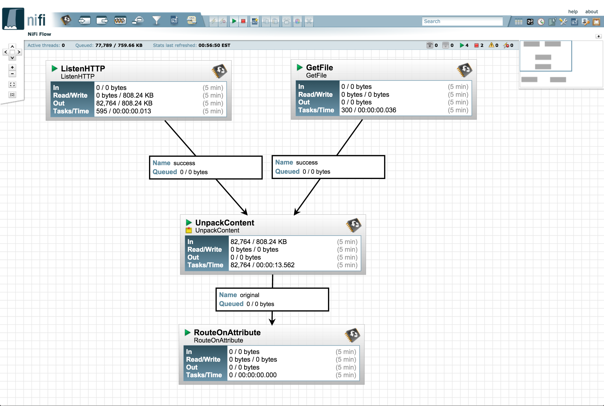

Apache nifi
Apache nifi
is a dataflow system based on the concepts of flow-based programming. It is currently a part of the Apache Incubator.

Features
Apache nifi supports powerful and scalable directed graphs of data routing, transformation, and system mediation logic. Some of the high-level capabilities and objectives of Apache NiFi include:
- Web-based user interface for seamless experience between design, control, feedback, and monitoring of data flows
- Highly configurable along several dimensions of quality of service such as loss tolerant versus guaranteed delivery, low latency versus high throughput, and priority based queuing
- Fine-grained data provenance for all data received, forked, joined, cloned, modified, sent, and ultimately dropped as data reaches its configured end-state
- Component-based extension model along well defined interfaces enabling rapid development and effective testing
- Security: Supports various forms of SSL, SSH, HTTPS for system to system flows and content encryption/decryption. And SSL, PKI, pluggable authorization for users.